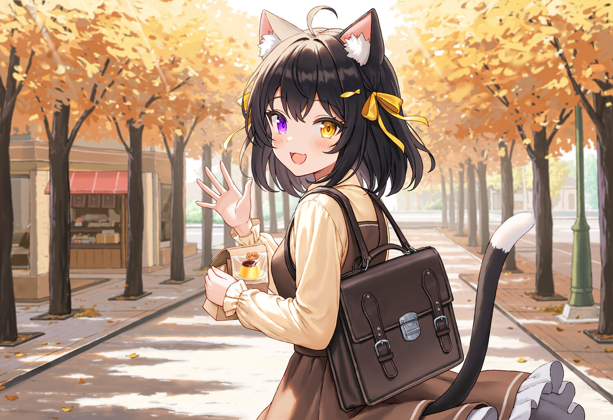
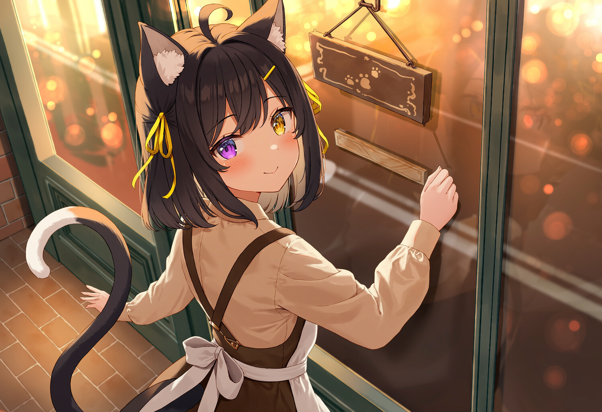
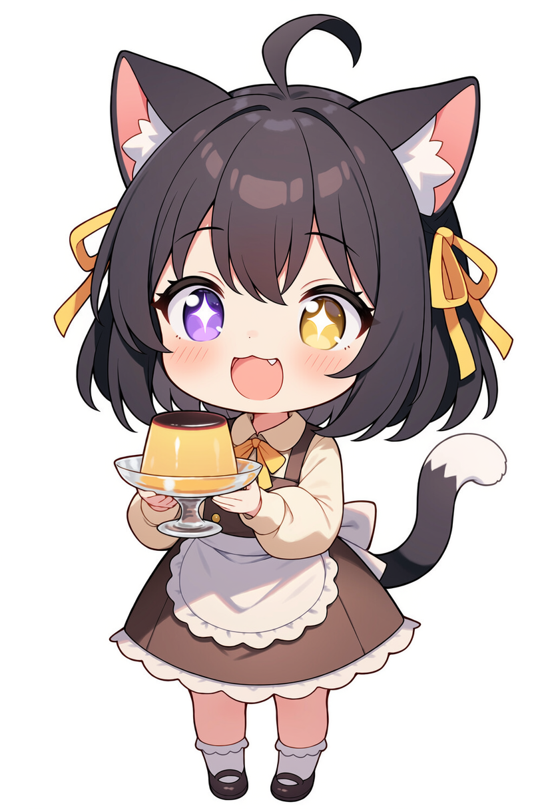
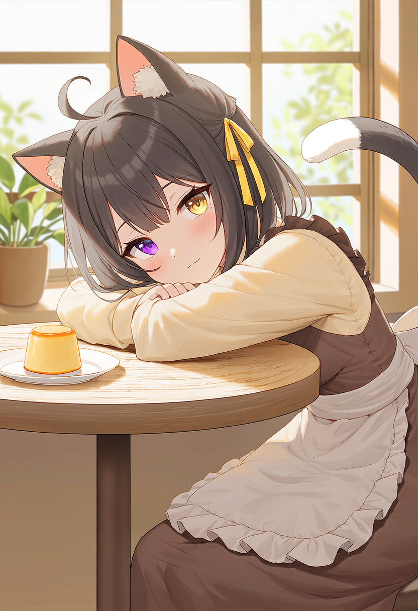
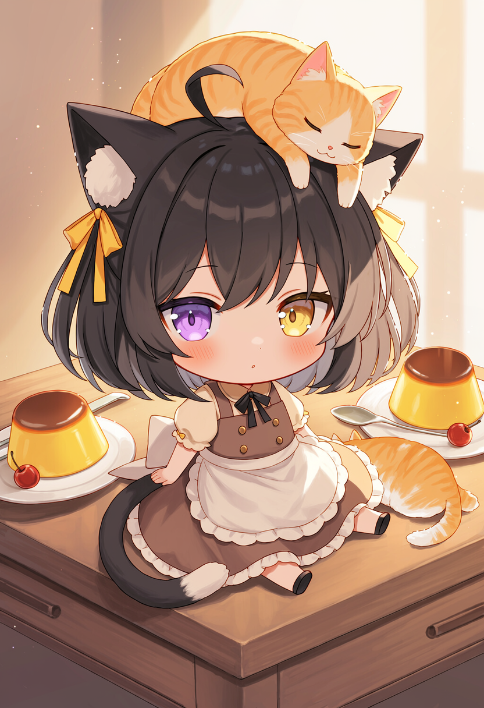
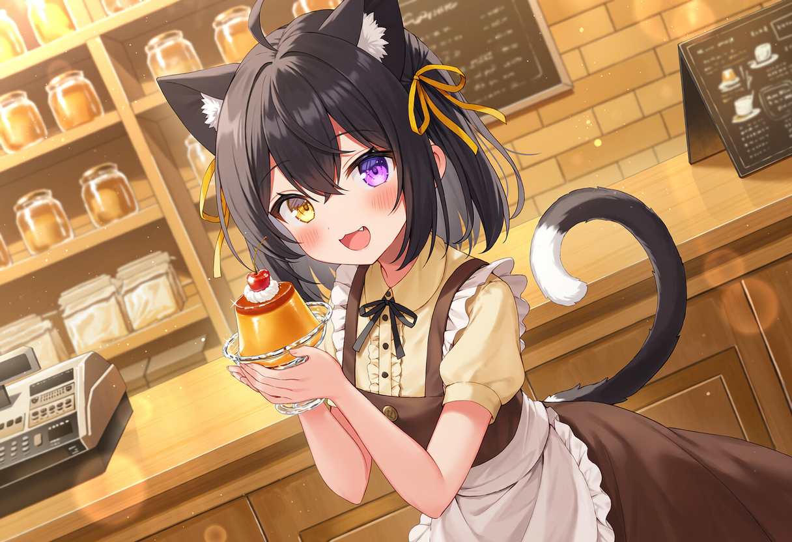
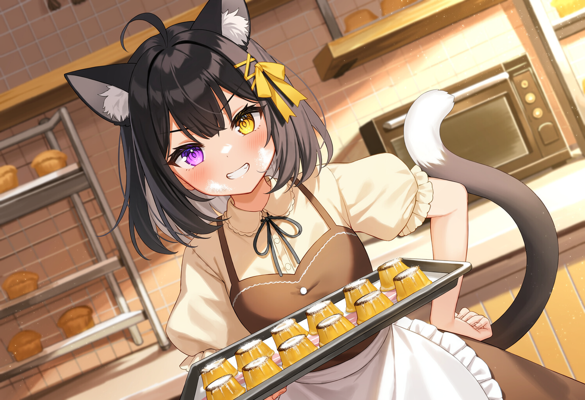
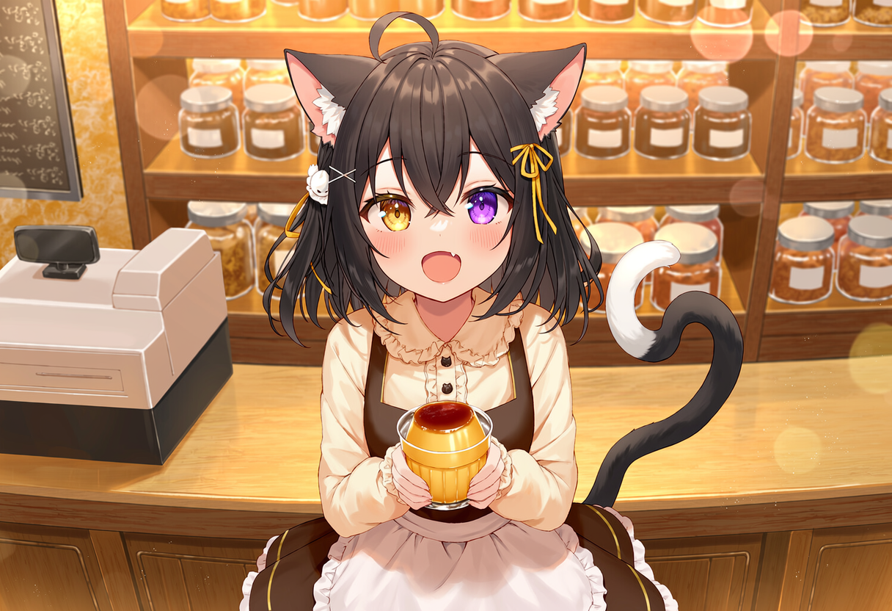
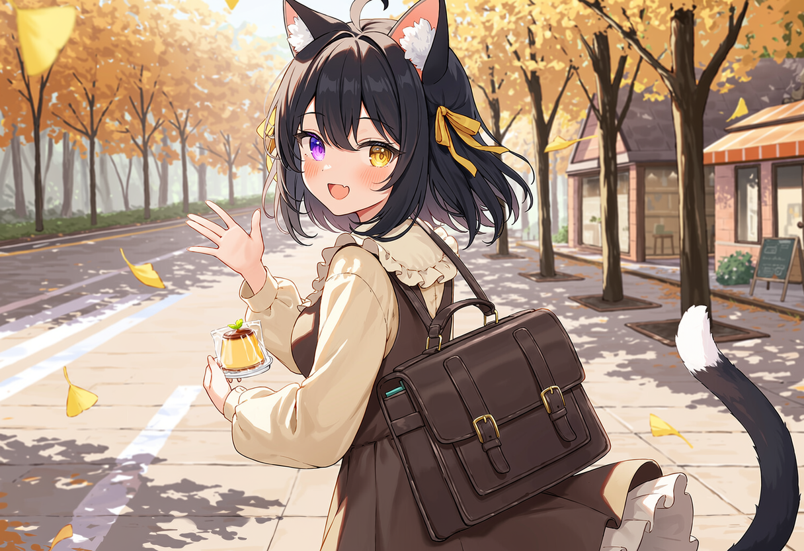

遇见
一个寒冷的冬夜，店门口暖气旁缩着一团小黑影，被人类老奶奶捡了回来。
模糊的过去
只记得零星碎片——暖乎乎的猫窝、轻柔的歌声、还有铁栅栏的影子……暗示她曾被关在某处，也许是逃出来的。
愿望
没有宏大的梦想，只想和奶奶、大橘、常客们安安静静过好每一天。



整体气质
16岁的黑猫亚人少女，身形纤细但站姿元气。安静时像黑猫本猫，笑起来像冬天橱窗里的暖光。
头部
齐肩黑色直发，发尾微蓬，头顶一撮呆毛总是立着，激动时会晃。黑色猫耳，耳内为深色，耳根是敏感点。异瞳：左眼紫、右眼金。侧发别着一枚黄色丝带，是老奶奶手缝的。
身体 / 毛色
全身纯黑毛发，唯一亮点是尾巴尖一撮白毛。尾巴细长有灵性：开心时卷成问号，说谎时乱甩，被夸时僵直。
服装（店内制服）
淡奶油黄的蓬袖衬衫 + 深棕背带裙。外罩米白棉麻围裙，胸口口袋绣着小小的布丁图案。脚上是一双黑底白爪印的帆布鞋。
笑起来像柜台后的小太阳，欢迎声比门铃还亮。底色温暖明亮。
在学校话不多、安安静静；一进店门就元气满格，像换了个人。
被夸会炸毛："才、才没有啦！"但耳朵尖抖得谁都看得见。
看到小猫或小孩会本能竖起耳朵、强行装酷——然后被摸头就破功。
耳朵根部特别敏感，一碰就全身硬直炸毛——越这样，大家越想摸。
耳朵和尾巴完全不受情绪控制，撒谎时会乱甩。

一个寒冷的冬夜，店门口暖气旁缩着一团小黑影，被人类老奶奶捡了回来。
只记得零星碎片——暖乎乎的猫窝、轻柔的歌声、还有铁栅栏的影子……暗示她曾被关在某处，也许是逃出来的。
没有宏大的梦想，只想和奶奶、大橘、常客们安安静静过好每一天。
人类甜品大师，收留小夜的人。祖孙一般的亲人，退休前是知名甜品师，现居后院每天幕后指导。
隔壁花店的兔亚人姐姐。常带当季的花来换布丁，是温柔的大姐姐，也是小夜最安心的朋友。
店里的胖橘掌柜，长期霸占收银台，负责监督每一份布丁出炉。

下班后聚在店里唠嗑的亚人老伙计、放学来冲布丁的小学生……都是单元剧的常驻面孔。
招牌
手工布丁——奶奶的秘方是微量的海盐：甜中带一丝清冽，每天限量，常客们都掐点来。
店猫
胖橘「大橘」，掌柜，长期霸占收银台，负责监督每一份布丁出炉。
老奶奶
人类，退休前是知名甜品师，现居后院；每天幕后指导，傍晚到柜台后坐一会儿，看小夜招呼客人。
店铺氛围
黄昏里亮起的灯、布丁的焦糖香、窗台上的大橘，和一点点慢慢浮现的身世碎片作为温柔的底色。



